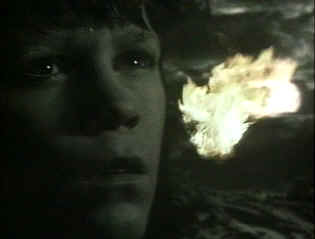

| Navigator: A Mediaeval Odyssey/ B,C+ |
| Hen's Tooth/1989/89/PS 1.33 |
Elements of The Navigator, a film directed by Vincent Ward, are stunning and magical. The beginning of the film is shot beautifully in black and white with mystical rhythms prevalent. It takes place during the Middle Ages as the black plague spreads its horror over Europe and across the waters to England. A small mining village, still unaffected by the horror, awaits the coming of the plague with surprisingly calm certainty. Griffin, a young village boy, is having visions of an extraordinary nature. Griffin’s visions and the world he dreams about are depicted in color, providing a consistent visual reference, though I must admit that I was eventually confused. There’s lots of religious symbolism in the dreams. enhanced by fine editing.
 |
| Dream and reality touch for a moment. ©Hen's Tooth |
One villager, Connor, has been missing for many days
after leaving the village to find out more about the black plague. When he
returns with news of the plague’s imminent arrival, the villagers heed
Griffin’s visions more closely. There’s a deep pit, an endless pit that
Griffin sees in his dream world that leads to the other end of the world and
salvation. A team of villagers led by Connor with Griffin as guide mine
their way through the depth of the pit into another reality, modern day New
Zealand.
While the stunning surreal images that provided
the mystical spark for the black and white world are still evident,
narrative elements become strained and almost comical. There’s even a touch
of Les Visiteurs, an hilarious French time travel farce, that perhaps
even was inspired by Ward’s work; but in a serious, mystical work, the comic
moments are intrusive, even if they are intentional.
In the end, Ward's work is flawed but often arresting.
It's well worth seeing, though I can't help being disappointed by its
failure to live up to its potential. Ward explored the other-worldly again
in the big production failure
What
Dreams May Come with Robin Williams. Young Hamish McFarlane is
innocent and virginal as Griffin. Bruce Lyons as Connor is strong and the
picture of youth. Everyone looks a trifle too well groomed for this dark
world.
Not a very good transfer, but serviceable. The black and
white images actually look the best showing off the high key photography to
good effect. There is some excess grain, especially in the color night
sequences. It certainly lacks the sparkle that would have added to the
wonder. Contrast level is not consistent from scene to scene. The image is
not always as sharp as can be. Color saturation lacks strength. The Dolby
Digital 2-channel stereo mix is clear and open. Strong regional accents may
be difficult to understand but through no fault of the recording.

Selections from the
Feature Archive include articles on
Akira Kurosawa,
Blonde
Bimbos,
Frank
Darabont,
Steven Culp,
John Herzfeld or
Vietnam:
The Hollywood Pariah, and many more....
Steven Culp extracts the essence of Robert F. Kennedy in Roger Donaldson's outstanding feature Thirteen Days. Culp recently shared insights on the performance and his career with Films on Disc. Click the image for more.

 Have you visited Home
Theater Talk lately? One of the friendliest places on the Net for Home
Theater and DVD discussion, you can get help for installation problems or
simply share your opinions with other Vidiots.
Have you visited Home
Theater Talk lately? One of the friendliest places on the Net for Home
Theater and DVD discussion, you can get help for installation problems or
simply share your opinions with other Vidiots.

The
American Widescreen Museum, is the ultimate resource for widescreen
movie information, Martin Hart's reliable site is a great tool for movie
buffs.

European film portal and hard to find video store.

ISF Monitor Calibrations in the Tristate
New York area. Lots of hardware info and frequent hardware peaks from video
expert Kevin Miller. They may be judgmental, but that's the point, isn't it.
Lots of DVD reviews plus news and more.

Glenn Erickson's insightful DVD reviews have been a Internet fixture for
several years. Check out some of his sophisticated feature articles.
Currently hosted by DVD Talk.